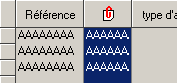
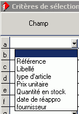
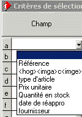

<com>texte
La commande com permet d’associer un commentaire à l’objet.
Elle est utilisée par le zoom, lors de la siasie du filtre, lorsque l’entête d’une colonne est en mode graphique. En effet, lors de la saisie du filtre, le zoom affiche la liste des colonnes (c’est à dire le texte contenu dans l’entête de chaque colonne). Si le contenu de l’entête est une suite de commandes graphiques, ce n’est bien sûr pas le texte de la colonne qui doit être affiché tel que. Dans ce cas, zoom cherche la commande <com> et affiche le texte associé.
Exemple :
L’entête de la deuxième colonne contient le texte :
<hog><imga>c<imge>o<imgf>note<com>Libellé

Lors de la saisie du filtre, zoom affiche les champs suivants :

Si La commande <com> était absente, nous aurions eu :

ce qui est nettement moins clair !